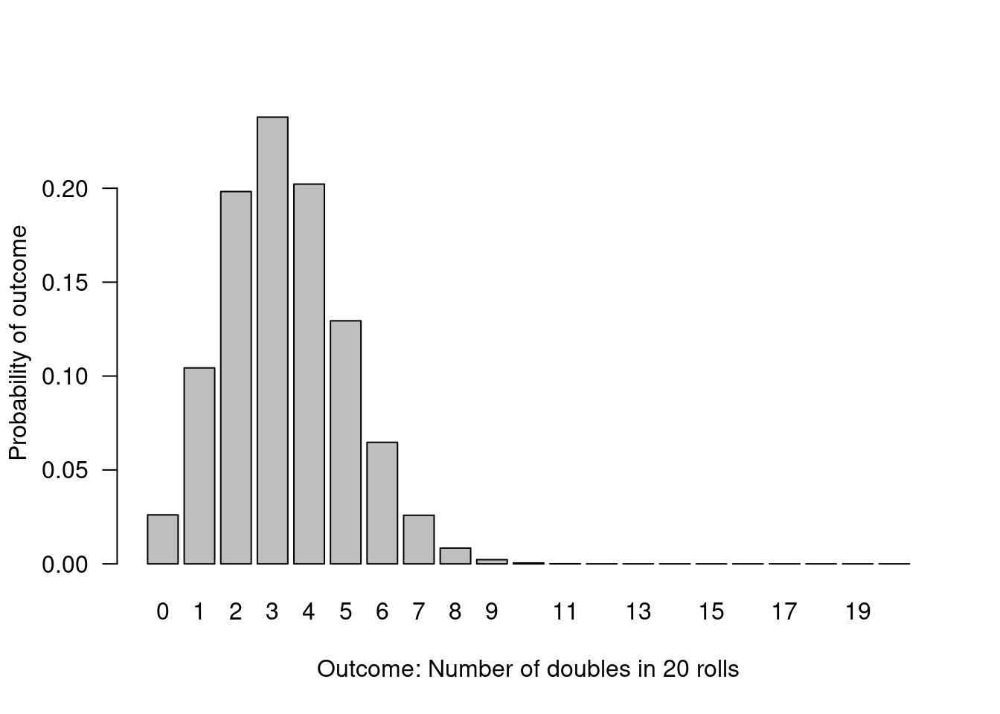
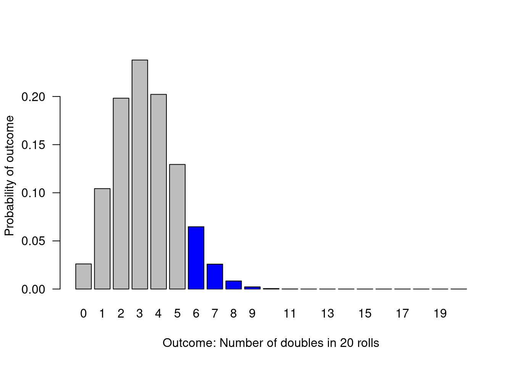
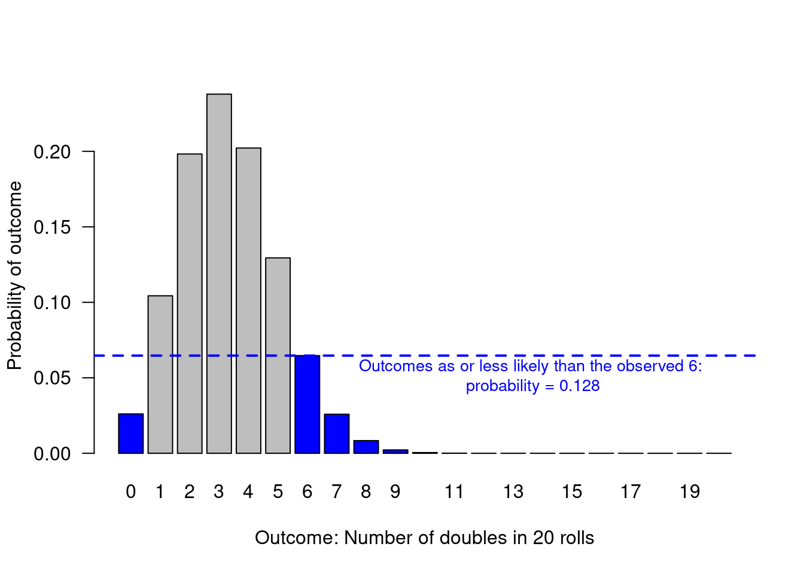
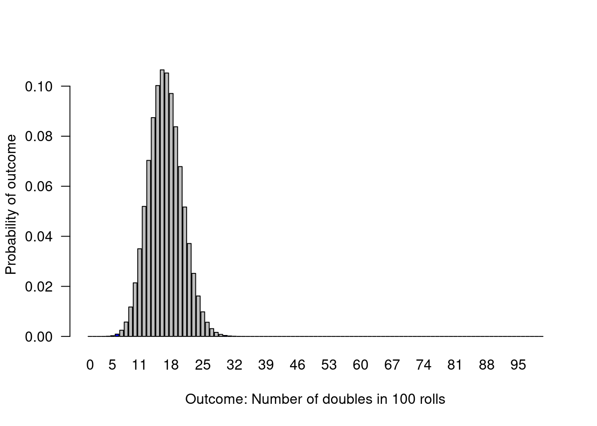

Learning objectives of this asynchronous lesson:
An experiment where there are two possible outcomes with probability p of “success” is called a Bernoulli trial.
# Simulate a single Bernoulli trial with p = 1/6
p = 1/6
if(runif(1) <= p){1}else{0}> [1] 0A sequence of Bernoulli trials is called a Binomial process.
# Simulate a 20 Bernoulli trials with p = 1/6
p = 1/6
n = 20
as.integer(runif(n) <= p)> [1] 0 0 0 0 0 0 0 0 0 0 1 0 0 1 0 1 0 0 0 0There are four built in functions related to the binomial distribution in R.
This function will output the probability of observing “x” successes in “size” trials when the probability of success is “prob”.
# probability mass function
obs = 6
n = 20
p = 1/6
dbinom(x = obs, size = n, prob = p)> [1] 0.06470515This function will output the probability of observing “q” or fewer successes in “size” trials when the probability of success is “prob”
obs = 6
n = 20
p = 1/6
pbinom(q = obs, size = n, prob = p)> [1] 0.9628647# If we want to know the probability of observing 6 or more successes, use
# 1- probability of observing at least 5
1 - pbinom(q = (obs - 1), size = n, prob = p)> [1] 0.1018405For this function, the user specifies probability of observing any outcome up to and including x and the function will output the corresponding x. For example, we know there is a 96% probability of observing a 6 or less…
cumul.prob = 0.962
n = 20
p = 1/6
qbinom(p = cumul.prob, size = n, prob = p)> [1] 6The inverse of the Cumulative Mass Function can be used as a random number generator, by putting p=runif(100), the function will generate 100 random outcomes of 20 rolls where the probability of doubles is 1/6.
R also has a built in random number generator.
This function will generate “n” random outcomes from “size” Bernoulli
trials when the probability of success is “prob”
trials = 100
n = 20
p = 1/6
rbinom(n = trials, size = n, prob = p)> [1] 2 4 2 4 5 3 2 3 7 3 5 5 3 2 5 3 5 1 4 5 3 4 6 4 4 1 3 1 1 3 2 3 5 4 2 1 1
> [38] 4 2 2 4 5 1 2 1 2 0 3 1 1 5 6 6 2 2 1 3 4 2 3 4 5 5 5 7 1 8 2 2 5 1 4 6 4
> [75] 3 5 5 6 5 4 2 6 3 5 4 5 4 5 3 4 4 4 1 3 3 3 6 1 2 2If the backgammon app on my phone is rolling the two die at random, doubles represent 6 out of 36 possible roll outcomes.
The null hypothesis is then: The die are fair. The frequency of doubles is 6/36 = 1/6 of all rolls.
This graph illustrates the probability of observing each possible outcome when the data only contain 20 observations of die rolls.
# Illustrate the null distribution for n=20
n=20
null.p = 1/6
possible.outcomes = c(0:n)
probability.outcome = dbinom(x = possible.outcomes, size = n, prob = null.p)
barplot(height = probability.outcome,
names.arg = possible.outcomes,
xlab = "Outcome: Number of doubles in 20 rolls",
ylab = "Probability of outcome",
las = 1 # orients the y-axis labels to read horizontally
)
# Calculate the probability of observing exactly 6 successes
n=20
obs = 6
null.p = 1/6
# probability of exactly 6
dbinom(x = obs, size = n, prob = null.p)> [1] 0.06470515# Calculate the probability of observing 6 or more successes
n=20
obs = 6
null.p = 1/6
# 1- probability of observing at least 5
1 - pbinom(q = (obs - 1), size = n, prob = null.p)> [1] 0.1018405We can visualize this as the sum of the height of all the bars including and to the right of 6.

Now, we need to also consider all outcomes that are less likely than 6.
# Calculate the probability of observing specifically 6 doubles or an outcome that is less likely than 6 doubles
sum(probability.outcome[probability.outcome <= dbinom(x = obs, size = n, prob = null.p)])> [1] 0.1279245
For all standard statistical tests, R has a built in function. Often these functions have lots of flexibility.
# Use the binom.test function
binom.test(x = obs, n = n, p = null.p)>
> Exact binomial test
>
> data: obs and n
> number of successes = 6, number of trials = 20, p-value = 0.1279
> alternative hypothesis: true probability of success is not equal to 0.1666667
> 95 percent confidence interval:
> 0.1189316 0.5427892
> sample estimates:
> probability of success
> 0.3Notice that the p-value reported by R’s built in function (p-value = 0.1279) reports the same p-value that we just calculated to represent the probability of observing a 6 or something less likely than a 6!
Notice also, that R report a point estimate for the probability of success based on the data (0.3), and the the 95% confidence interval for that point estimate (0.1189, 0.5428).
The 95% confidence interval reports the range within which there is a 95% probability the true proportion lies.
We can also calculate this measure directly:
options(digits = 3)
# Calculate the point estimate and 95% confidence interval
point.estimate = obs/n
## 95% confidence interval around a proportion using Normal approximation
se <- sqrt(point.estimate * (1 - point.estimate)/ n)
lowerCI = point.estimate + qnorm(0.025, mean = 0, sd = 1) * se
upperCI = point.estimate + qnorm(0.975, mean = 0, sd = 1) * se
print(cbind(point.estimate, lowerCI, upperCI))> point.estimate lowerCI upperCI
> [1,] 0.3 0.0992 0.501You will see that we calculated a slightly different 95% confidence interval than the R function did. R’s default is an exact 95% confidence interval. I used the Normal approximation.
Many classical statistics were developed more than 100 years ago, prior to the availability of widespread fast computing we enjoy. Therefore, when calculating exact confidence intervals was tedious by hand or require difficult computations, there was a great incentive to develop easier to calculate high-quality approximate confidence intervals.
So, for many statistics, you will find that there many options. When in doubt, use the default in R. It is also generally reasonable to use the Normal approximation (often called the asymptotic approach). Don’t stress it.
# There is an R package called 'binom' that has all the different methods
# for calculating the 95% confidence interval around a proportion!
#install.packages("binom")
#library(binom)
binom.confint(obs, n = n, method = "all")> method x n mean lower upper
> 1 agresti-coull 6 20 0.30 0.1432 0.521
> 2 asymptotic 6 20 0.30 0.0992 0.501
> 3 bayes 6 20 0.31 0.1255 0.503
> 4 cloglog 6 20 0.30 0.1225 0.501
> 5 exact 6 20 0.30 0.1189 0.543
> 6 logit 6 20 0.30 0.1414 0.527
> 7 probit 6 20 0.30 0.1352 0.521
> 8 profile 6 20 0.30 0.1318 0.517
> 9 lrt 6 20 0.30 0.1318 0.517
> 10 prop.test 6 20 0.30 0.1284 0.543
> 11 wilson 6 20 0.30 0.1455 0.519For all statistical analysis, sample size makes a huge difference in the precision of a point estimate. That is to say, greater sample size decreases uncertainty in the range within which the true proportion lies.
Let’s consider if I had seen the same rate of doubles over 100 rolls. So now, that would be 30 doubles in 100 rolls.
obs = 30
n = 100
null.p = 1/6
# Use the binom.test function
binom.test(x = obs, n = n, p = null.p)>
> Exact binomial test
>
> data: obs and n
> number of successes = 30, number of trials = 100, p-value = 0.001
> alternative hypothesis: true probability of success is not equal to 0.167
> 95 percent confidence interval:
> 0.212 0.400
> sample estimates:
> probability of success
> 0.3If the die were fair, this would be an extremely unlikely observation. The probability of observing 30 doubles in 100 rolls (or anything less likely than that) is 0.001.
We can visualize this, but the bars under 7 and over 30 are so small, we can barely see that they are coloured blue.

Next: t-tests